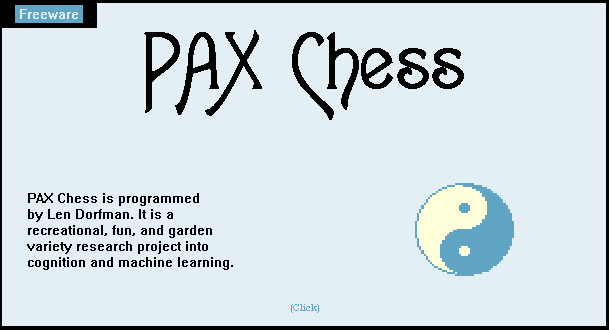

PAX opens from Dr. Dorfman's real 13 MB opening book, keeps his three temperaments, and resigns the way his did. It now judges positions with an evaluation learned by gradient descent from about 900,000 Stockfish-scored positions in games that began in his book. When it loses, it finds the point of no return, the move where its chances collapsed, and learns from it so that it also avoids similar positions, not just that exact one.
Loading PAX's judgement and the book…
Lessons are kept in this browser. Each time the page opens, PAX replays them into its judgement.
"It's important at this primordial stage of PAX's development for me to receive many move lists."with metta, Len
"Satvic (balanced)"his name for PAX's middle temperament, between Aggressive and Passive
"William C.C. Chen Yang Style"a tai chi entry left in PAX's menu resources
PAX CHESS · Forever Freeware · In-progress recreation, research project · by Len Dorfman · [build date 11.17.01 am]
"Kindness is my religion."the Dalai Lama, his favorite quote
"You don't have to be a Buddha to act like one."the quote he used to guide his behavior
On his homepage he described daily Yang Style Taijiquan 24-movement Short Form practice and morning Vipassana meditation, and said he started PAX in 1996 "for laughs."
He first got me interested in the internet in 1995 and 1996. He did tai chi on the soccer field in the mornings and didn't care what people thought of him. In a chaotic middle school, his classroom was a bastion of peace.A former student
Len Dorfman taught programming in the Shoreham-Wading River schools from 1970 to 1999 and wrote Developing Games That Learn (1996). He built PAX as "a recreational, fun, and garden variety research project into cognition and machine learning." Its learning switch said "The feature will be coded after PAX starts learning." This is that feature.
How it works: PAX's judgement is a learned value for every piece on every square, separately for the middlegame and the endgame. The values were fitted by gradient descent (Texel-style tuning) to Stockfish's scores on about 900,000 positions from games that start in Dorfman's MARK10 book, and are searched with alpha-beta. A small neural network was tried first. It wasn't more accurate and searched ten times slower, so it lost to these tables. The point of no return is the last moment PAX's winning chances were above 35%; the PAX move right after it is the lesson. Lessons adjust those learned values directly, so similar positions are judged differently too, and are also remembered as never-enter positions, his original 1996 rule. PAX 2.0 is a tribute, not his code; his original 2001 program rated about 1560 against Stockfish in testing.